You can also download a PDF copy of this lecture.
A couple of properties of a distribution that we often want to measure are location and variability.
The variance for a sample of observations can be written as \[ s^2 = \frac{(x_1 - \bar{x})^2 + (x_2 - \bar{x})^2 + \cdots + (x_n - \bar{x})^2}{n-1} = \frac{\sum_{i=1}^n (x_i - \bar{x})^2}{n-1}. \] Example: Consider the following sample of observations: 1, 1, 7. The mean is \(\bar{x}\) = 3 and the variance is \[ s^2 = \frac{(1 - 3)^2 + (1 - 3)^2 + (7 - 3)^2}{3-1} = 12. \] A related measure is the standard deviation which is the square root of the variance, so it can be written as \[ s = \sqrt{\frac{(x_1 - \bar{x})^2 + (x_2 - \bar{x})^2 + \cdots + (x_n - \bar{x})^2}{n-1}} = \sqrt{\frac{\sum_{i=1}^n (x_i - \bar{x})^2}{n-1}}. \] Note that the symbol for the variance is \(s^2\) because the variance equals the square of the standard deviation (\(s\)).
Another measure is the range which is simply defined as the difference between the largest and smallest values, \[ \text{range} = \max(x_1,x_2,\dots,x_n) - \min(x_1,x_2,\dots,x_n), \] and the interquartile range which we will discuss later.
The cumulative distribution shows the relationship between the value of the variable and cumulative relative frequency.
Example: The following is a hypothetical set of observations of examination scores.
5, 6, 6, 6, 7, 7, 8, 8, 8, 10
| \(x\) | Frequency | Relative Frequency | Cumulative Relative Frequency |
|---|---|---|---|
| 5 | 1 | 0.1 | 0.1 |
| 6 | 3 | 0.3 | 0.4 |
| 7 | 2 | 0.2 | 0.6 |
| 8 | 3 | 0.3 | 0.9 |
| 10 | 1 | 0.1 | 1.0 |
We can graph the cumulative distribution using a step function. 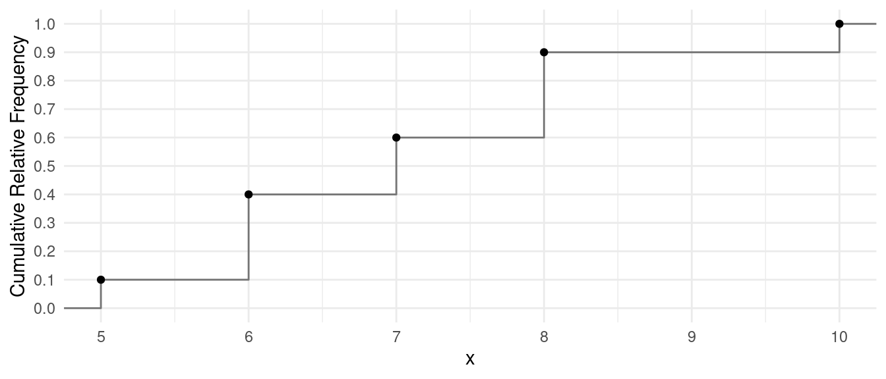
Example: Consider the cumulative distribution of the sample of observations of eruption duration of Old Faithful.| Time | Frequency | Relative Frequency | Cumulative Relative Frequency |
|---|---|---|---|
| 1.6 | 1 | 0.004 | 0.004 |
| 1.7 | 3 | 0.011 | 0.015 |
| 1.8 | 22 | 0.081 | 0.096 |
| 1.9 | 18 | 0.066 | 0.162 |
| 2 | 16 | 0.059 | 0.221 |
| \(\vdots\) | \(\vdots\) | \(\vdots\) | \(\vdots\) |
| 5.1 | 2 | 0.007 | 1 |
Note: The relative and cumulative relative frequencies above have been rounded. 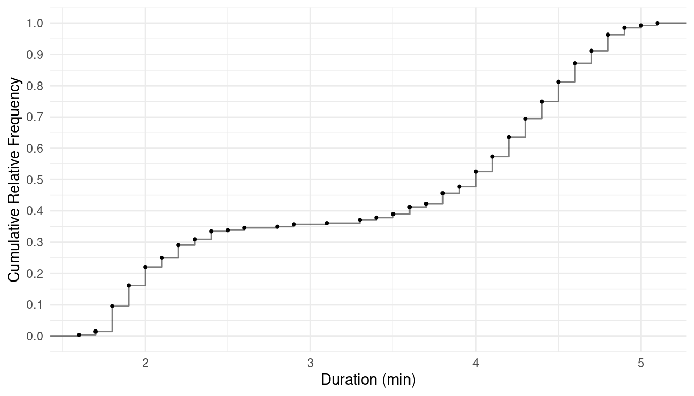
The \(P\)th percentile is the value of the variable such that \(P\%\) of the observations are less than that value.
Finding Percentiles: Finding percentiles from a set of observations is surprisingly complex! Consider the following distribution.| \(x\) | Frequency | Relative Frequency | Cumulative Relative Frequency |
|---|---|---|---|
| 5 | 1 | 0.1 | 0.1 |
| 6 | 3 | 0.3 | 0.4 |
| 7 | 2 | 0.2 | 0.6 |
| 8 | 3 | 0.3 | 0.9 |
| 10 | 1 | 0.1 | 1.0 |
Here are a couple of examples.
What is the 60th percentile? Several values of \(x\) would qualify! Any \(x\) such that 7 \(<\) x \(\le\) 8 has 60% of the observations that are less than it.
What is the 70th percentile? No values of \(x\) would qualify! The percent of observations less than 8 is 60%, and the percent of observations for any \(x\) > 8 is 90% or more.
One solution is to use the midpoint in the first case, and the smallest value of \(x\) that has more than \(P\)% of observations less than it in the second case. This is easier to explain/do using a graph of the cumulative distribution.
Finding Percentiles Using the Cumulative Distribution: To find the approximate percentile using a graph of the cumulative relative distribution, find the value where the step function crosses the cumulative relative frequency of \(P\)/100. If more than one value crosses value, use the midpoint (i.e., average of the two values).
Example: We can confirm that the 25th, 40th, 50th, 60th, and 70th percentiles for the distribution show below are 6, 6.5, 7, 7.5, and 8, respectively.
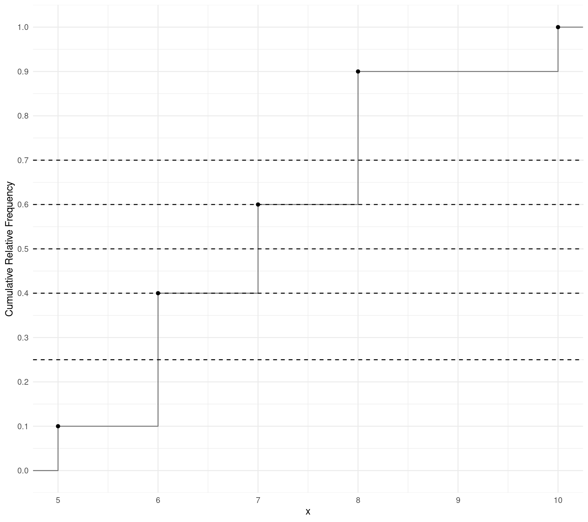
Example: We can use the following plot to approximate the 25th, 50th, and 75th percentiles “by eye” (the actual percentiles are 2.15, 4, and 4.45). 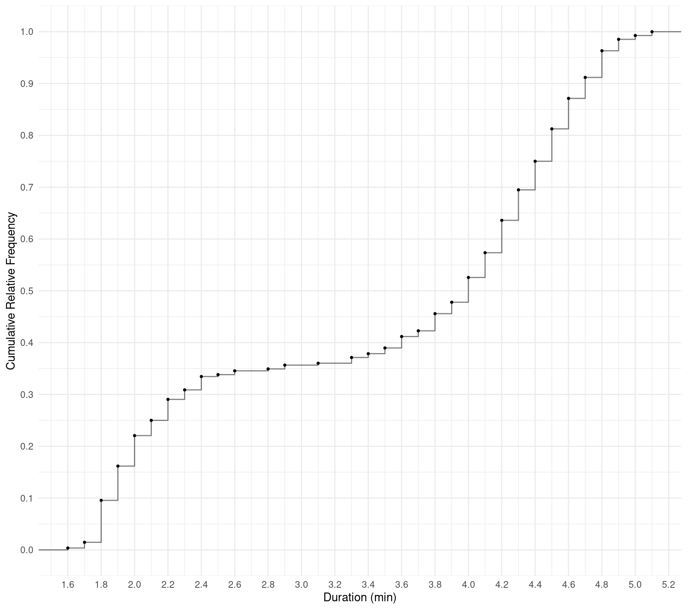
A box plot is a graphical representation of a distribution of a quantitative variable that uses what is called a five-number summary:
Comment: Because there is more than one way to approximate a percentile and thus a quartile, there is more than one way to draw a boxplot. For consistency we will use the approximation given earlier for finding percentiles.
Example: Box plot based on an earlier example.
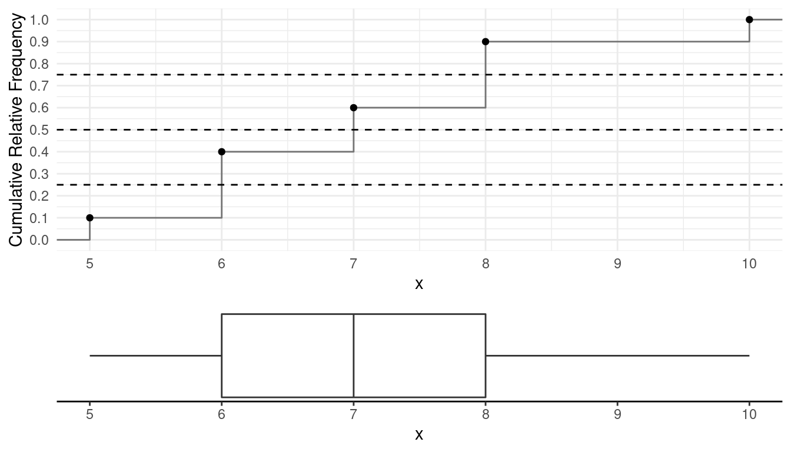 Note that the five number summary is 5, 6, 7, 8, and 10.
Example: Box plot of the Old Faithful data. 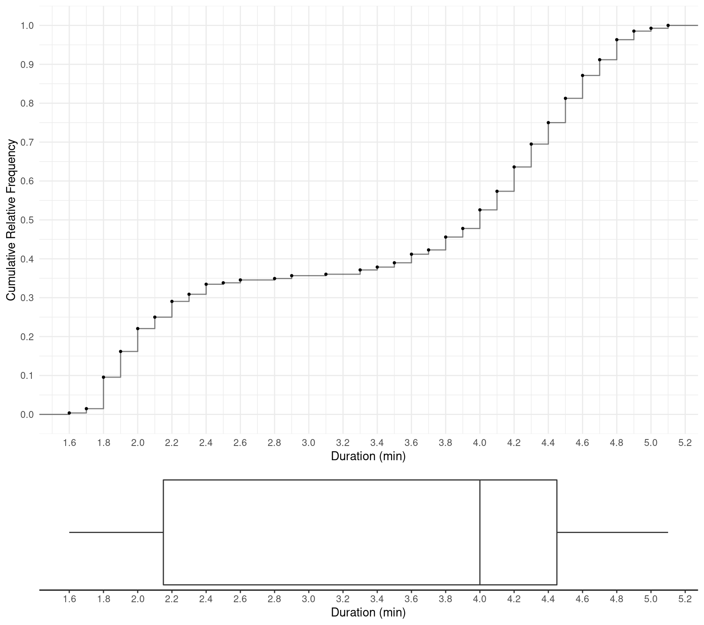 Note that the five number summary is 1.6, 2.15, 4, 4.45, and 5.1.
A box plot visually depicts three summary measures: the median (i.e., \(Q_2\)), range (i.e., maximum \(-\) minimum), and interquartile range (i.e., \(Q_3-Q_1\)).
Example: Cumulative distributions and box plots of the data from the study on creativity and motivation. 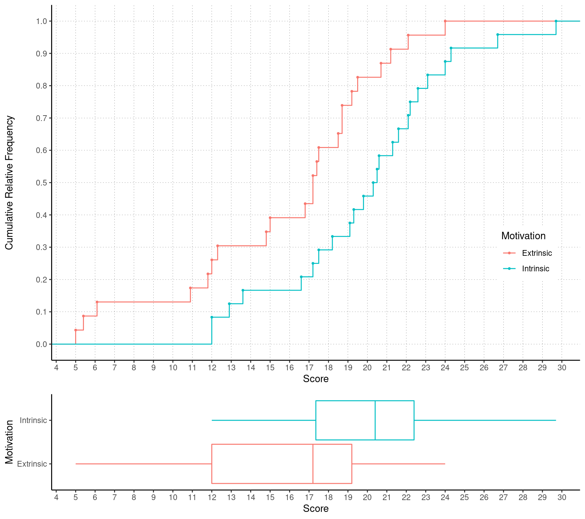
Example: Distribution of examination scores from Stat 251, Fall 2016. 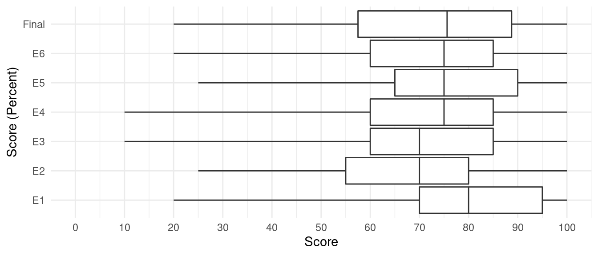
Example: Distribution of response times for 11 non-schizophrenic individuals and six schizophrenic individuals. 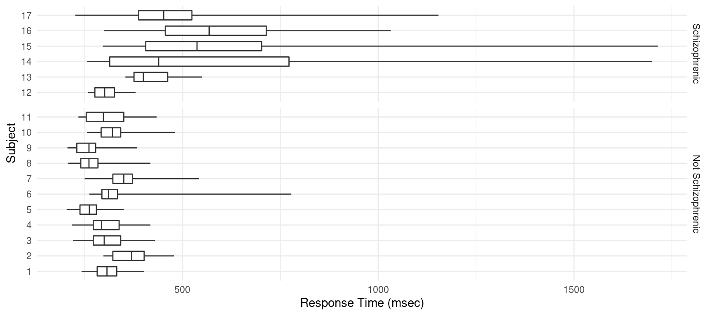
Some terms we use to describe the shape of the distribution of a quantitative variable: symmetric, uniform, left-skewed, right-skewed, uni-modal, bi-modal.
Example: Uniform and symmetric. 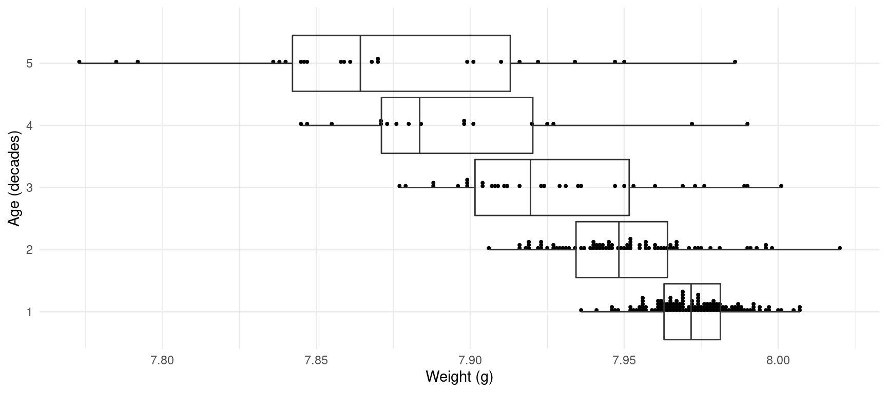
Example: Uni-modal and symmetric. 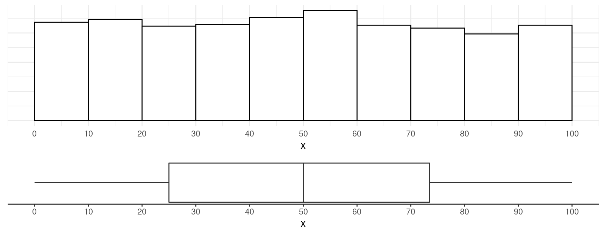
Example: Bi-modal and symmetric. 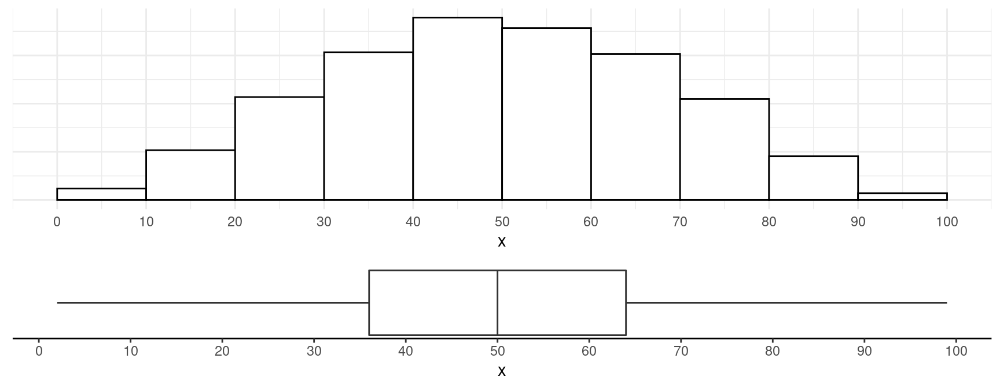
Example: Left-skewed and uni-modal. 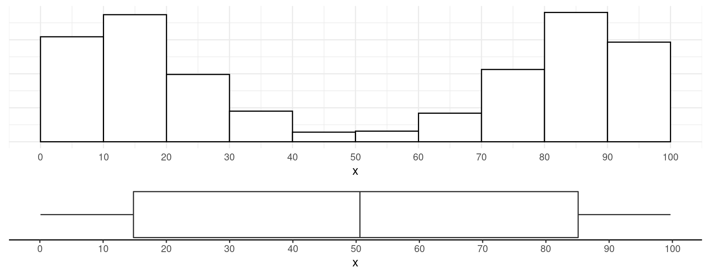
Example: Right-skewed and uni-modal. 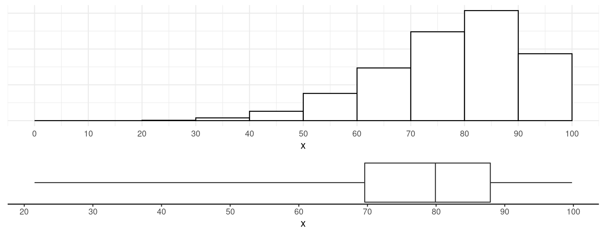